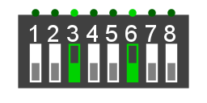

DIP-переключатель
DIP-переключатель
| Библиотека: | Ввод-вывод |
| Внешний вид: |  |
Поведение
DIP-переключатель представляет собой блок тумблеров, сохраняющих свое состояние. Каждым переключателем в блоке можно управлять независимо, переводя его в состояние 0 или 1. В зависимости от конфигурации компонент выводит объединенное многобитное значение или значения отдельных битов.
Контакты
Компонент имеет один многобитный выходной контакт. Каждый бит выхода соответствует текущему состоянию отдельного тумблера в блоке (1, если переключатель включен/замкнут, и 0, если выключен/разомкнут).
Атрибуты
Когда компонент выбран или добавляется, клавиши со стрелками меняют его атрибут Направление.
- Направление
- Расположение выходных контактов относительно компонента.
- Количество переключателей
- Задает количество отдельных тумблеров в блоке.
- Цвет
- Цвет, используемый для отображения переключателей.
- Метка
- Текст метки компонента.
- Шрифт метки
- Шрифт метки.
- Положение метки
- Положение метки относительно компонента.
- Цвет метки
- Цвет метки.
Поведение Инструмента «Нажатие»
Нажатие на конкретный тумблер в блоке с помощью Инструмента «Нажатие» переключает его состояние (из 0 в 1 или из 1 в 0). В отличие от кнопки, состояние остается измененным после того, как кнопка мыши будет отпущена.
Назад к Справке по библиотеке